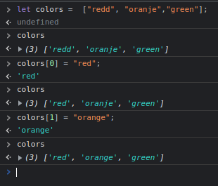
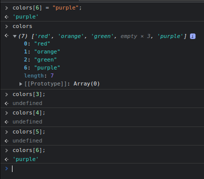

We can access an array item with:
days[0];
This will show us index 0 of our array days.
RESULTS IN --> "Monday"
(days = [ "Monday", "Tuesday", "Wednesday", "Thursday", "Friday", "Saturday", "Sunday", ];)
We can access a specific index of an array index too.
days[0][0];
RESULTS IN --> "M"
We can change an index of an array index if needed.
THIS IS NOT POSSIBLE when working with a string. We can access the specific index of our string, but not modify it.
We made an array called colors.
let colors = ["redd","oranje","green"]
Two of our items are mispelled, we can update their values like this:
We can change an item to another type too, like to a number or boolean.
We can create new array items and place them wherever we want, even if it is not right after our last defined index item.
Here we have created a new index item for our array colors, it is at index 6.
We only had 3 items before, so the last index filled was 2.
Now, all array indexes between 2 and 6 are empty:
They show as undefined, since no value has been given to them, but they can´t just not exist since we defined a value for index 6 already!
Here we update an item, and also change another one.